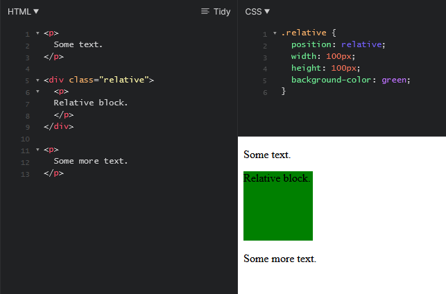
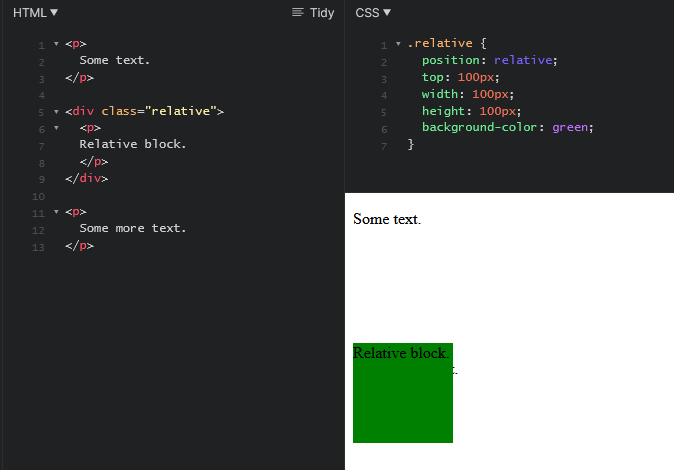
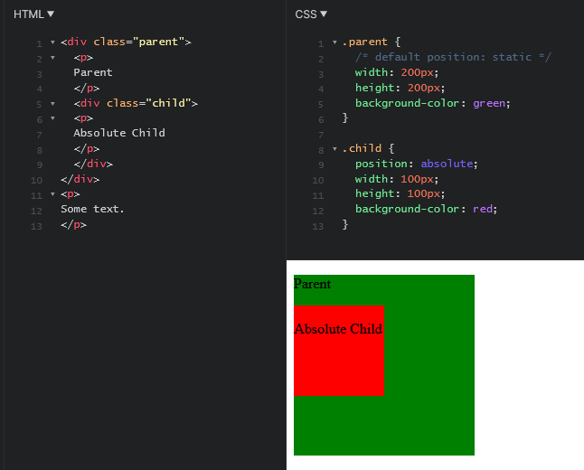
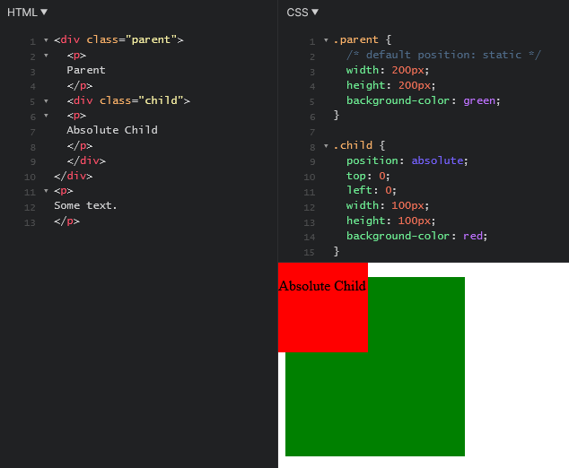
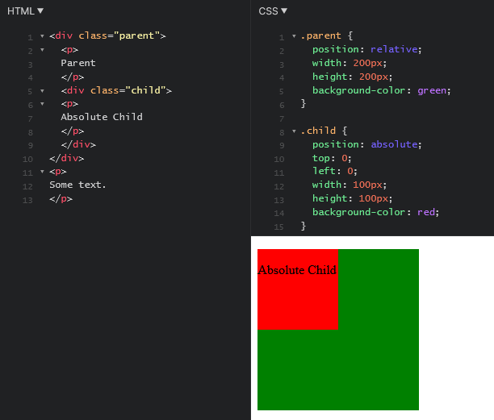

There are many ways to move things around the page to create the layout you want. In this post, I'll be talking about the position attribute.
The position attribute can be used to determine how an element will be positioned, and it accepts five (main) values:
(There's also some other values it accepts, but I'll focus on these for now. I'll also skip sticky.)
Static is the default state - you can't really move the element around, and it'll sit wherever you've placed it in your HTML code's flow.
Relative, much like static, sits in the normal flow of the document. This means wherever you place it in the HTML, it will always keep its original spot. Take a look at the code below:

As you can see, it sits nicely between the text above and below it, as per the flow of the code.
We can also move our relative element with the top, left, right, and bottom properties. For now, lets just move it 100px away from the top.

Note: These properties will not work with static elements (give it a try!) but can also be used on absolute and fixed elements.
In this image, notice that it moves 100px away from its original position;
Absolute elements differ from relative, in that it is:
'Removed from the flow of the page' just means when we move it around, its original spot isn't saved. From the relative example above, you can see that the space the element originally was has a blank space. This is because it still holds onto its original flow in the page.
Take a look at the code below:

We have an absolute element inside of a static one. Lets move the absolute element.

Setting top:0 and left:0 means it should stick to the top left corner of whatever it's moving in relation to. In this image, since the parent div is static (i.e is not positioned) it defaults to the body. Let's give the parent element a position of relative.

Now it sticks to the top-left of the element!
Fixed means the element is removed from the flow of the page (like absolute) and moves in relation to the viewport. For example, a navigation at the top of the screen of a website that follows down when you scroll can be done using the fixed position.
TLDR;